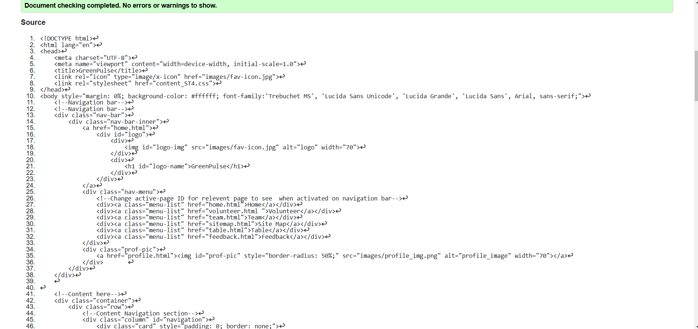

Profile Page Validation Report
The profile page has been successfully validated using W3C HTML and CSS validation tools, confirming that it follows proper coding standards and best practices. The HTML structure is well-formed, with correctly nested elements, valid form inputs, and properly implemented accessibility attributes such as alt text for images and semantic headings. No errors or warnings were detected, ensuring smooth rendering across different browsers.
Back to Page Editor page
Sitemap validation report
The sitemap page has been successfully validated using W3C HTML and CSS validation tools, confirming that it adheres to proper coding standards and best practices. The HTML structure is well-formed, with correctly nested elements and properly linked SVG components. No syntax errors or validation warnings were found, ensuring smooth functionality across different browsers.
Back to Page Editor page
Content Page validation report
The successful validation of the Eco-Tourism content page confirms that it adheres to proper HTML and CSS standards. With no errors or warnings, the page maintains a structured layout, ensuring responsiveness and accessibility. Proper use of semantic elements, optimized styling, and interactive features contribute to a smooth user experience.
